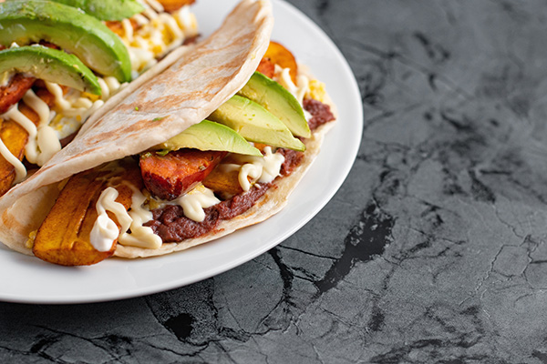

Baleadas Recipe
Baleadas are one of Honduras’s most beloved traditional dishes, known for their simple yet delicious combination of flavors. This popular street food consists of a thick, soft flour tortilla folded around creamy refried beans and queso seco, often accompanied by ingredients such as eggs, avocado, sour cream, or steak. The warm tortilla and savory fillings create a satisfying balance of textures and tastes, making baleadas a comforting meal that can be enjoyed any time of day. Celebrated for their versatility and rich cultural heritage, baleadas are a staple of Honduran cuisine and a favorite among locals and visitors alike.
Indredigents
Tortilla
- 2 cups all-purpose flour
- 1 tsp baking powder
- 1/2 tsp salt
- 3 tbsp vegetable oil or lard
- 3/4 cup warm water
Filling
- 1 cup refried red beans
- 1/2 cup crumbled queso fresco or grated cheese
- 1/4 cup crema or sour cream
Optional
- Sliced avocado
- Scrambled eggs
- Chicken
- Steak
- Hot Sauce
Instructions
- In a large bowl, combine the flour, baking powder, and salt. Add the vegetable oil and mix until crumbly. Gradually add warm water and knead until a soft, smooth dough forms.
- Cover the dough with a damp cloth and let it rest for 20 minutes.
- Divide the dough into 6 equal pieces and roll each piece into a ball. Flatten each ball with a rolling pin to form thin, round tortillas.
- Heat a skillet or griddle over medium heat. Cook each tortilla for about 1-2 minutes per side until lightly browned and puffed.
- Spread a layer of refried beans onto each tortilla. Sprinkle with crumbled cheese and drizzle with crema. Add any desired toppings
- Fold the tortilla in half and serve warm. Enjoy your homemade baleadas!